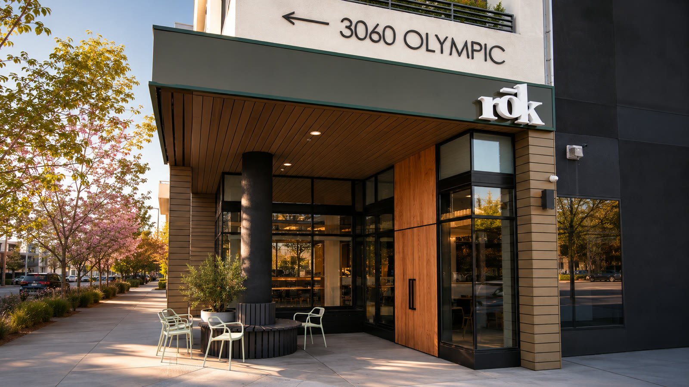
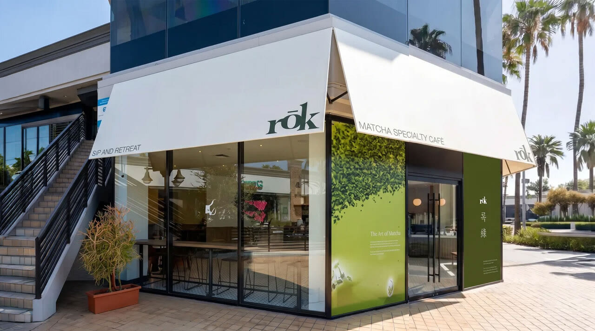
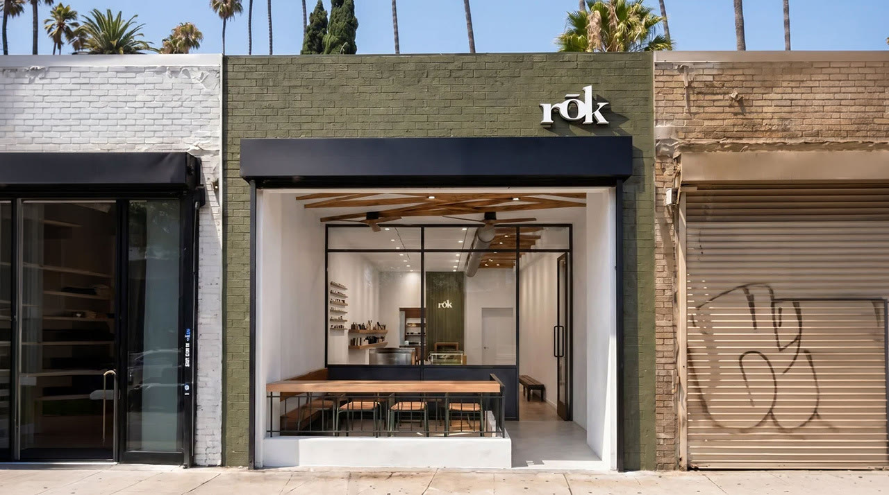
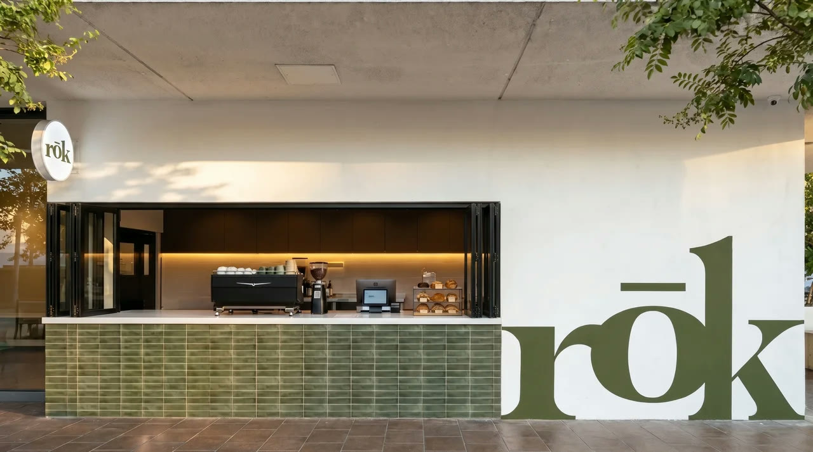
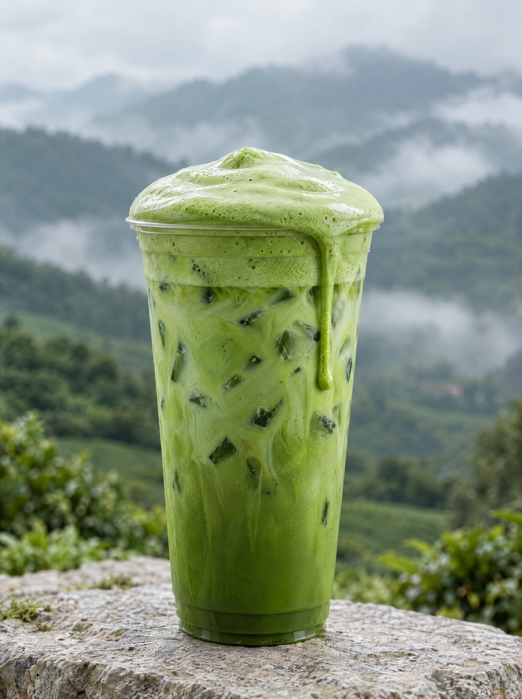
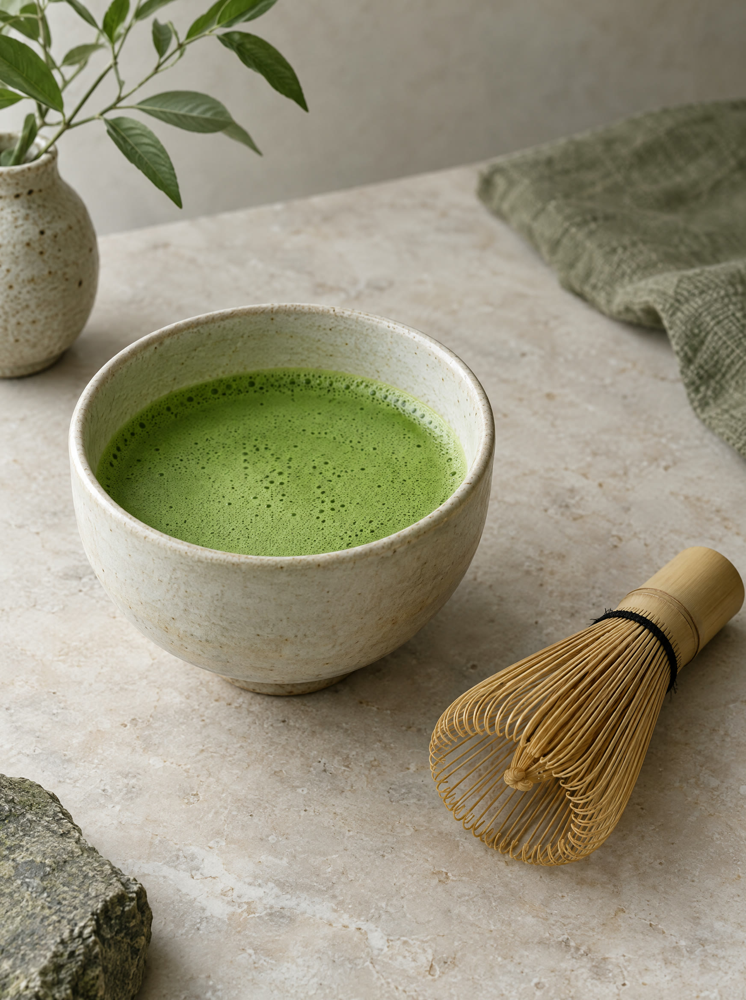
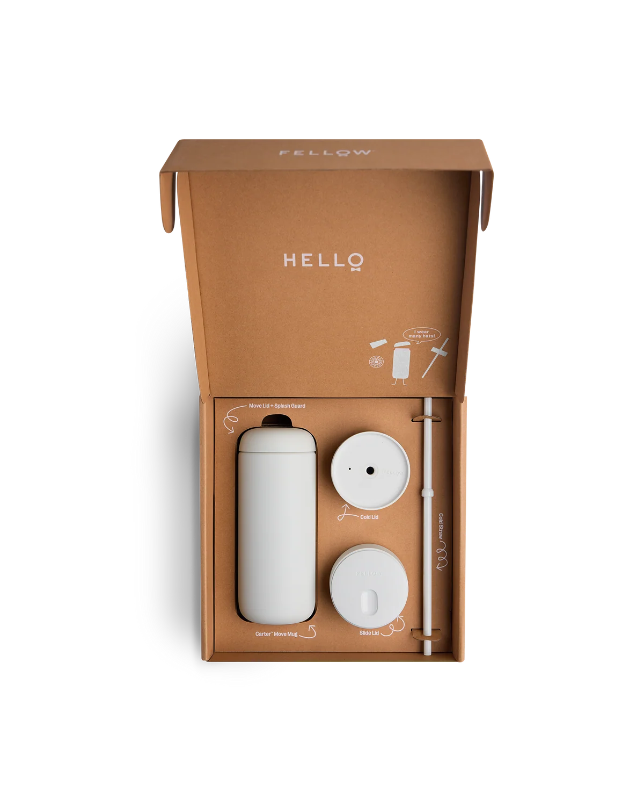
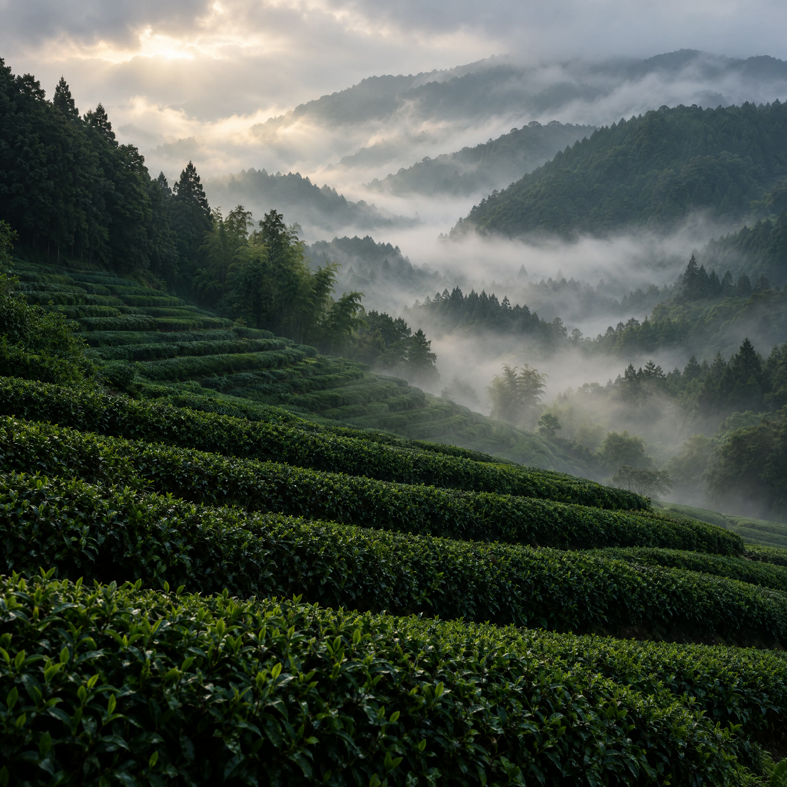

01 / 04 · Koreatown
rōk · Koreatown, Olympic Blvd
3060 W Olympic Blvd #150Los Angeles, CA 90006
- Sun to Thurs
- 8am to 10pm
- Fri to Sat
- 8am to 11pm
Inspired by the Korean word 초록 (chorōk), meaning “green.”
The color of matcha. The calm of nature.
The spirit behind everything we do that we hope to share with you, one cup at a time.
The color of matcha. The calm of nature. The spirit behind everything we do that we hope to share with you, one cup at a time.
Find a rōk
01 / 04 · Koreatown

02 / 04 · Studio City

03 / 04 · Silver Lake
Grand Opening Soon
Get Directions
04 / 04 · Koreatown


rōk (록/綠): inspired by the Korean word 초록 (chorōk), meaning “green.”
The color of matcha. The calm of nature. The spirit behind everything we do that we hope to share with you, one cup at a time.
16 oz Carter Move Mug and three lids.
Splash Guard in, Move Lid on.
Swap to the Cold Lid or Slide Lid any time.

Uncompromised coffee meets ultimate versatility. Pick up our award-winning Carter Move Mug with three lid variations, all in one beautiful (and highly giftable) box.
ShopLatest Articles
RŌK is women-owned. Inspired by the next generation, we support Girls Inc., helping create brighter paths for young women to grow with confidence and possibility.
girls inc.
Sourced from Uji, one of the world's most renowned matcha regions, where stone-ground tea is made from carefully shade-grown leaves. Vibrant green color, smooth umami, and naturally clean, long-lasting energy. We use only ceremonial grade matcha, always in pursuit of the finest, one cup at a time.
We offer almond milk and oat milk as dairy free alternatives for any of our drinks.
Our Mugwort tea is a non caffeinated Korean herbal tea which is slightly earthier than matcha. All of our coffee drinks can also be made decaf upon request. Please note that all matcha based drinks contain caffeine.
We use ceremonial grade matcha sourced from Uji, Japan, known for its rich, vibrant flavor.
All of our drinks are served in one standard size, carefully crafted to deliver the perfect balance of flavor and experience.
We are a cashless cafe and accept card and digital payments only.
At this time, we do not offer Wi-Fi. We’ve intentionally created a space that encourages meaningful connection. Whether that’s with the people you come with or simply with yourself while you’re here.